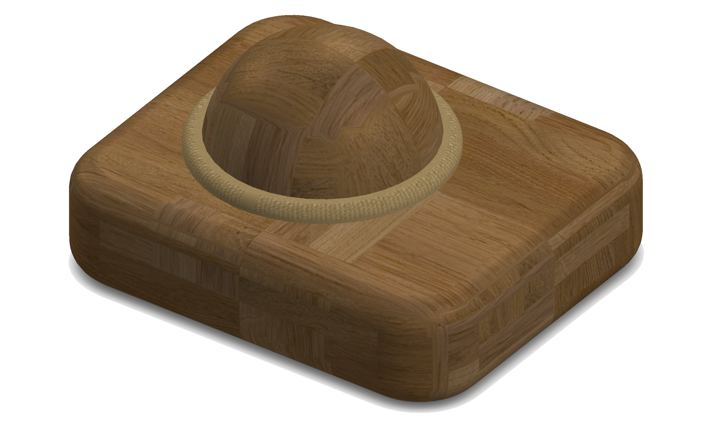
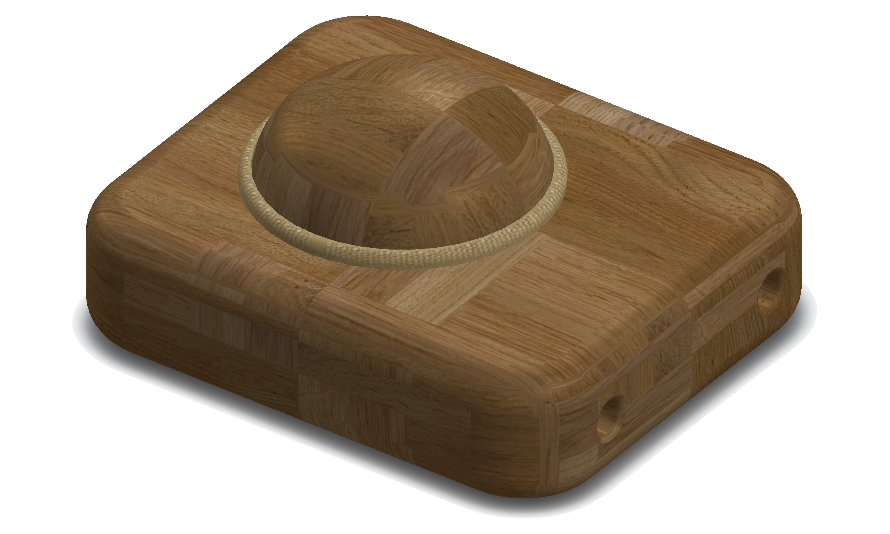
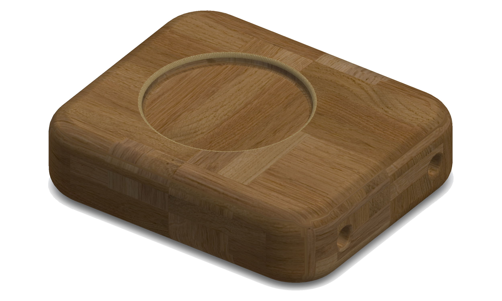
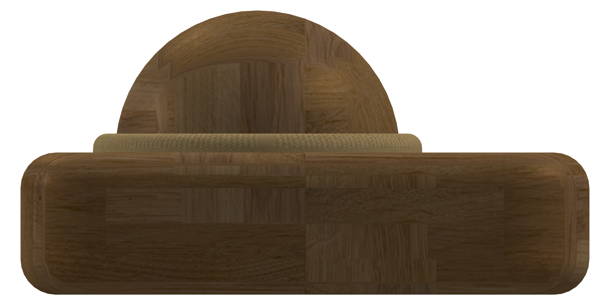
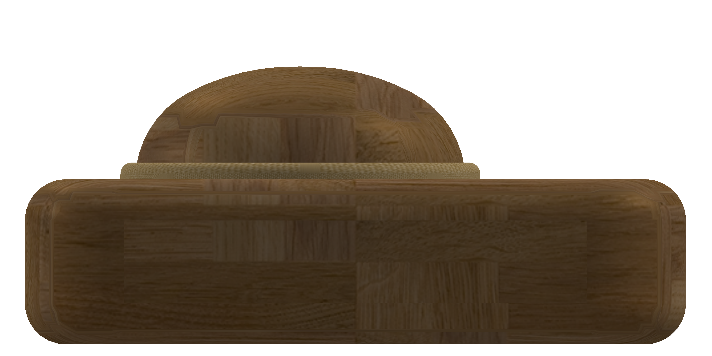
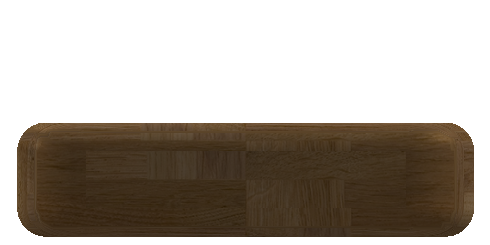
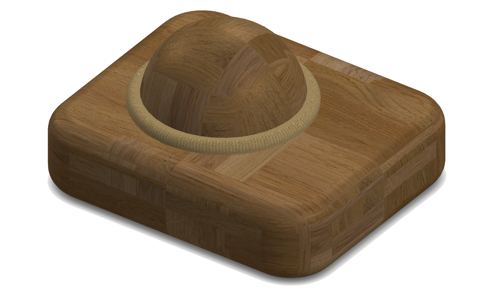
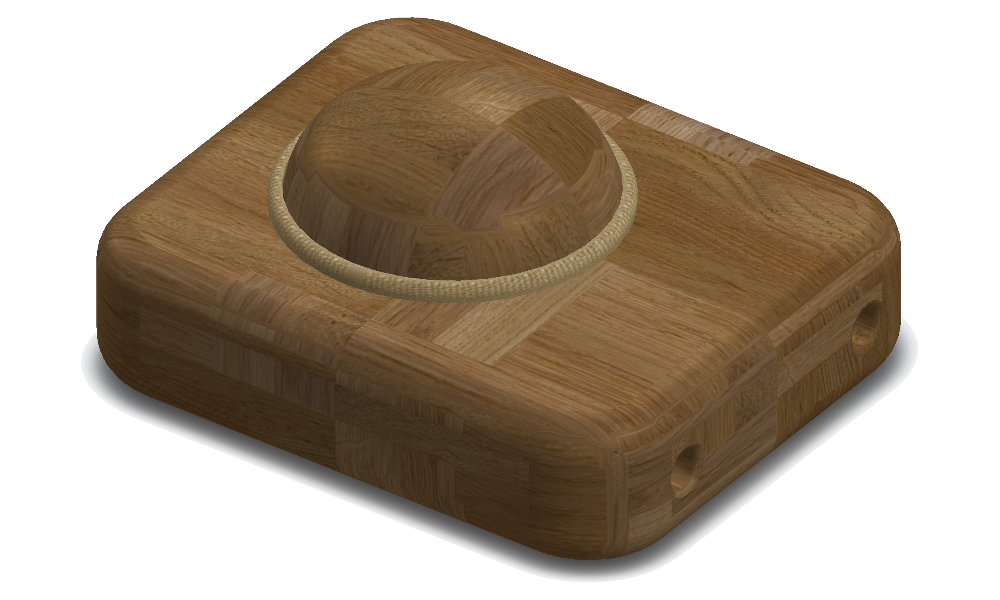
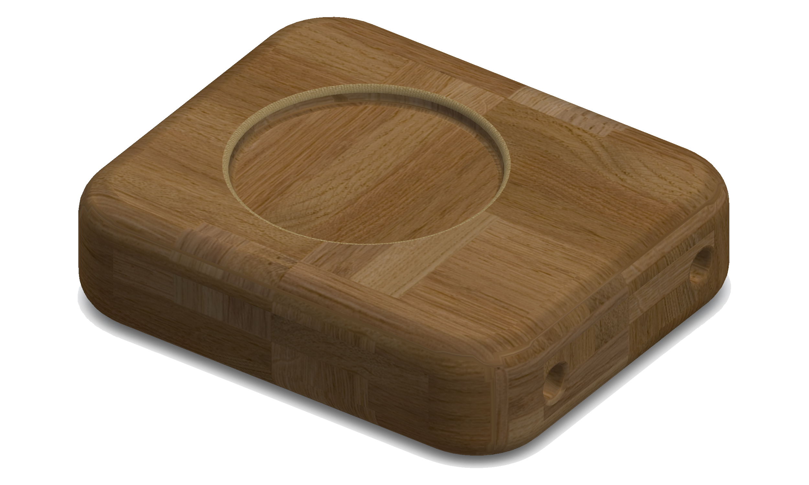
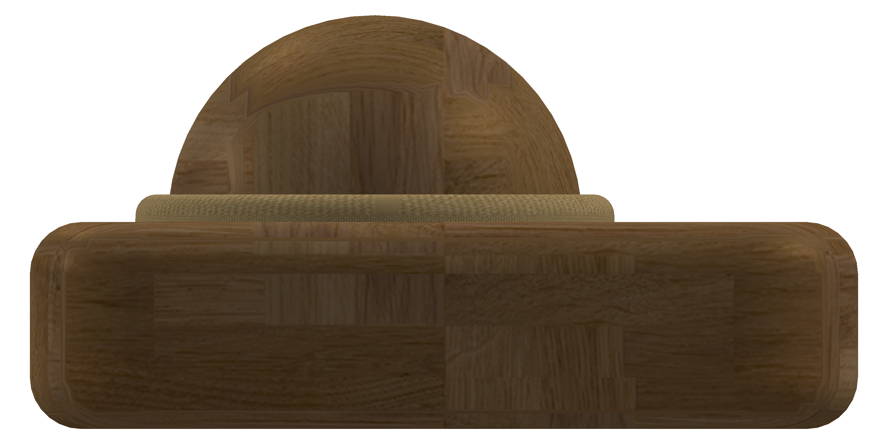
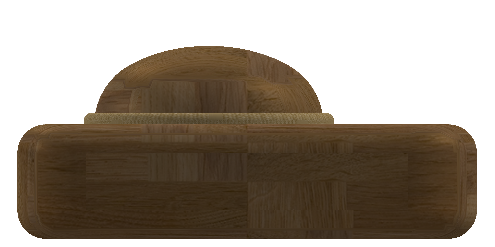
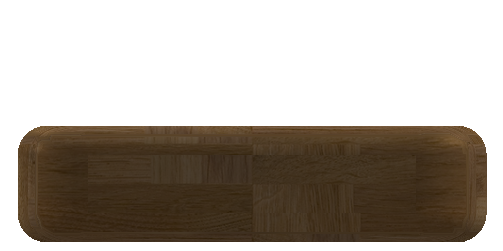
Design and prototype a manual kitchen hand tool to scoop, stir, scrape, etc. in the food and or drink preparation process.
Consider a product of human hand action and context in a design process. Meaningful development of form through an iterative human & life-centered design process.
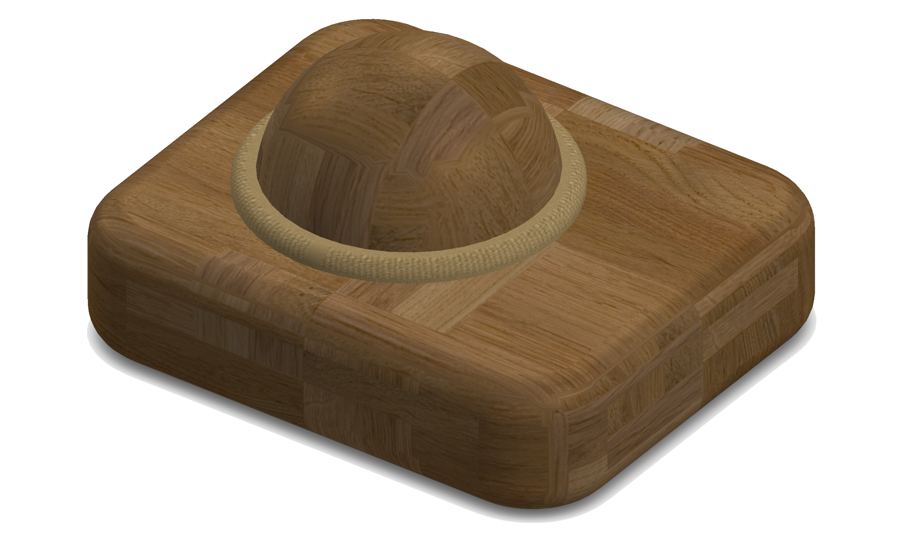
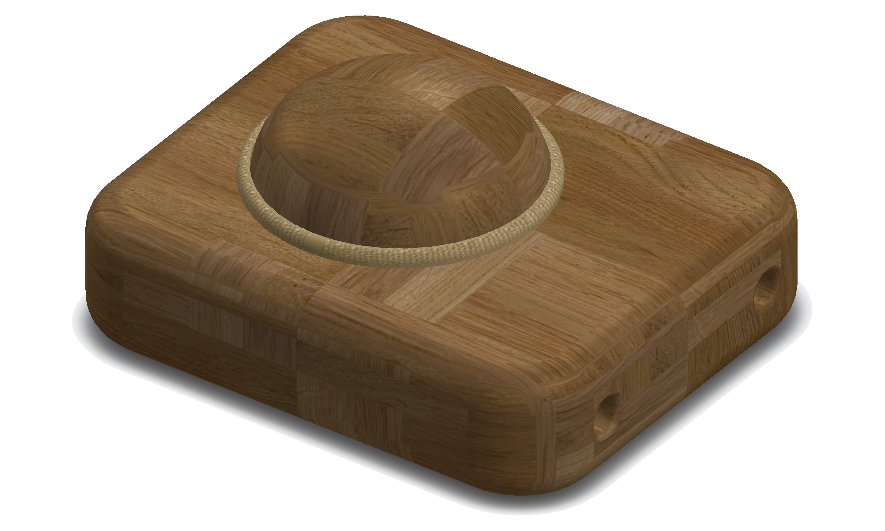
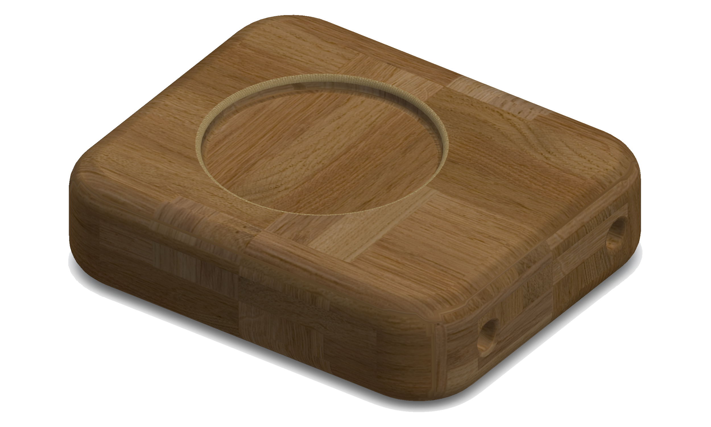
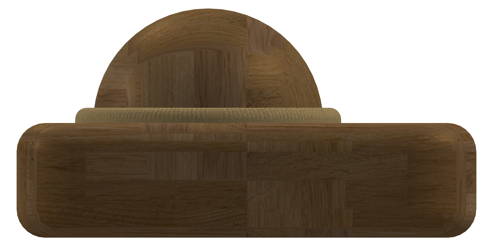
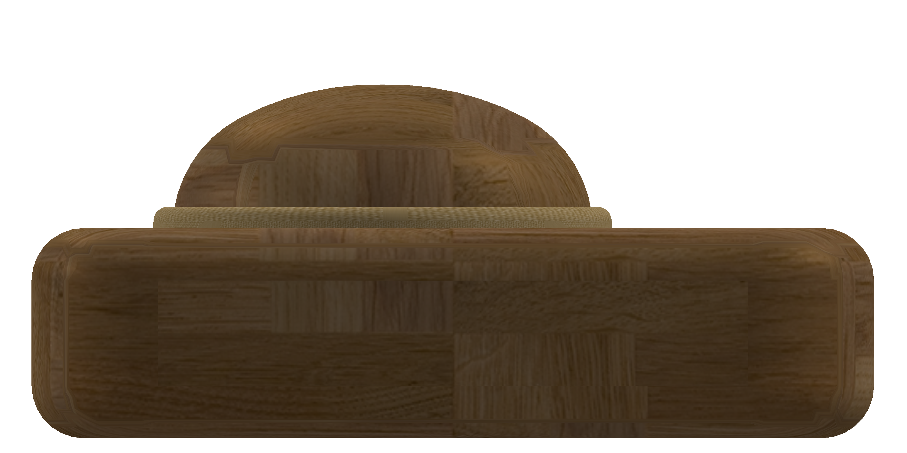
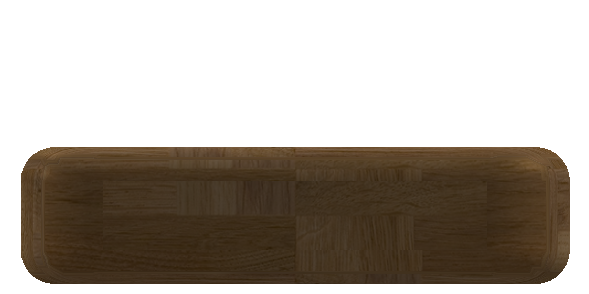